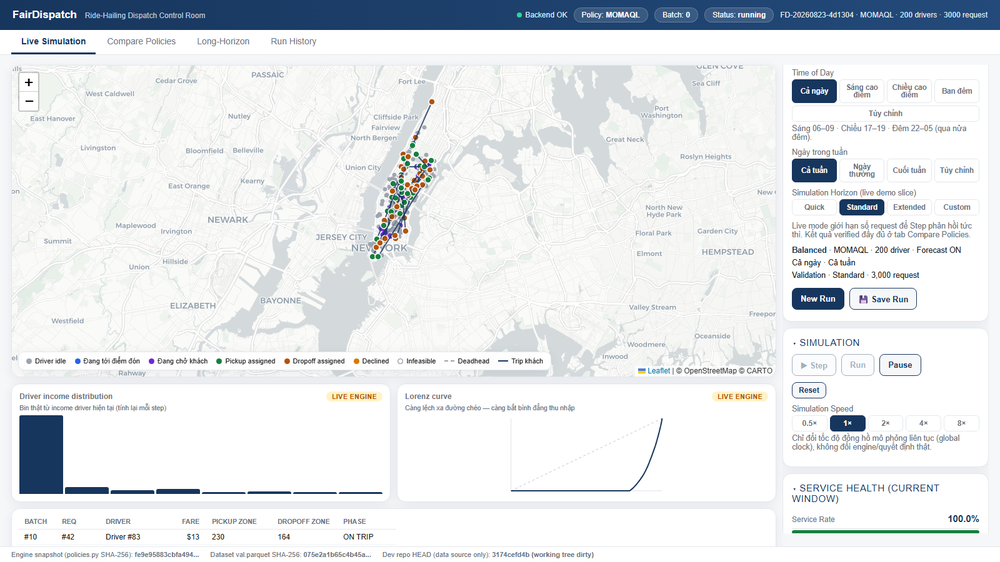

Hệ thống mô phỏng và đánh giá chiến lược điều phối cân bằng hiệu quả và công bằng
NYC Taxi 2013 · MOMAQL · Demo mô phỏng trực quan
67
vùng (zone)
200
tài xế
~1,3tr
chuyến (Train+Val+Test)
Nội dung trình bày
Nội dung trình bày
01Bài toán và mục tiêu
02Hệ thống FairDispatch
03Cách điều phối và chỉ số đánh giá
04Kết quả thực nghiệm
05Demo sản phẩm
06Giới hạn và kết luận
Phần 1 · Bài toán và mục tiêu
Tối ưu hiệu quả thôi thì chưa đủ — thu nhập tài xế có thể bị lệch
Nền tảng gọi xe cần phục vụ nhiều chuyến và tối ưu hiệu quả.
Nhưng nếu chỉ ưu tiên chuyến có lợi nhất, thu nhập tài xế có thể bị lệch.
Bài toán: vừa giữ hiệu quả hệ thống, vừa hạn chế chênh lệch thu nhập tài xế.
Hai khái niệm xuyên suốt bài trình bày: Utility (hiệu quả tổng thể) — càng cao càng tốt; Fairness (công bằng thu nhập) — thu nhập giữa các tài xế có đồng đều không.
Tối ưu lợi nhuận từng chuyến
↓
Driver A nhận nhiều chuyến tốt Driver B nhận ít chuyến tốt
↓
Khoảng cách thu nhập tăng dần
Sơ đồ minh họa cơ chế — không phải số liệu.
Phần 2 · Hệ thống FairDispatch
FairDispatch là gì?
FairDispatch là một hệ thống hỗ trợ đánh giá chiến lược điều phối chuyến xe.
Không phải app khách hàng.
Không phải app tài xế.
Không phải hệ thống production thay thế Grab/XanhSM.
Nó là
công cụ mô phỏng;
công cụ so sánh thuật toán;
công cụ giải thích quyết định;
bản demo trực quan để trình bày kết quả nghiên cứu.
Phần 2 · Hệ thống FairDispatch
FairDispatch phục vụ ai?
Đối tượng
Người quản lý vận hành — muốn biết chiến lược nào nên dùng.
Kỹ sư điều phối — muốn kiểm tra thuật toán trước khi triển khai.
Nhóm dữ liệu/nghiên cứu — muốn so sánh và giải thích kết quả.
Giá trị
Mô phỏng trước khi áp dụng thật.
So sánh hiệu quả và công bằng.
Xem lý do vì sao hệ thống chọn tài xế.
Kiểm thử trên dữ liệu lịch sử.
Phần 2 · Hệ thống FairDispatch
FairDispatch gồm 5 phần chính
Dữ liệu & kịch bản chuyến xe thật
→
Bộ mô phỏng dòng chảy request/tài xế
→
Chiến lược điều phối 5 cách ghép
→
Đánh giá Utility, Gini, service rate
→
Giao diện demo bản đồ trực quan
Phần 3 · Cách điều phối và chỉ số đánh giá
Từ dữ liệu NYC Taxi đến quyết định điều phối
Dữ liệu
NYC TLC 2013 đã làm sạch sẵn, thượng nguồn
→
Lọc Manhattan + chất lượng 2 cờ có sẵn trong dữ liệu
→
67 zone TLC + giờ zone_id có sẵn, giờ tự tính
→
Train / Validation / Test chia liên tục theo thời gian
↓
Dispatch engine
Bộ mô phỏng batch 60 giây
→
5 chiến lược điều phối
→
Hungarian Assignment
↓
Output
Utility / Fairness
→
Demo bản đồ
Phần 3 · Cách điều phối và chỉ số đánh giá
Bộ mô phỏng điều phối hoạt động thế nào?
60s
mỗi cửa sổ batch
≤600s
pickup ETA khả thi
200
tài xế canonical
67
taxi zone
Request
→
Candidate drivers
→
Assignment
→
Update state
Dùng Hungarian Assignment (thuật toán ghép tối ưu) để ghép nhiều tài xế với nhiều chuyến cùng lúc trong 1 cửa sổ.
Sau mỗi chuyến, hệ thống cập nhật vị trí, thu nhập và trạng thái tài xế.
5 chiến lược × 5 seed = 25 lần chạy baseline · 195.508 request Validation · 195.506 request Test đánh giá cuối.
Phần 3 · Cách điều phối và chỉ số đánh giá
Các chiến lược điều phối được so sánh
Chiến lược
Cách hoạt động
Greedy
ưu tiên chuyến có fare cao nhất, chưa quan tâm khoảng cách hay thu nhập tài xế.
Nearest
ưu tiên tài xế có thời gian tới điểm đón (pickup ETA) ngắn nhất.
LAF
ưu tiên tài xế đang thu nhập thấp hơn trung bình, để kéo thu nhập cả đội xe về gần nhau.
REASSIGN
ghép tối ưu theo lợi ích ròng hiện tại (fare trừ chi phí deadhead), chưa nhìn tương lai và chưa cân bằng thu nhập.
MOMAQL
kết hợp lợi ích hiện tại, giá trị khu vực tương lai và điều chỉnh công bằng thu nhập.
Phần 3 · Cách điều phối và chỉ số đánh giá
MOMAQL: không chỉ nhìn chuyến hiện tại
Lợi ích chuyến hiện tại
+
Giá trị khu vực sau khi trả khách
+
Điều chỉnh theo thu nhập tài xế
=
Điểm ghép tài xế–chuyến xe
Nếu hai chuyến gần giống nhau, hệ thống sẽ ưu tiên chuyến giúp tài xế đến khu vực có nhiều cơ hội hơn, hoặc giúp cân bằng thu nhập tốt hơn.
Variance / CV (độ phân tán thu nhập): càng thấp càng tốt.
Số chuyến phục vụ: phản ánh khả năng đáp ứng nhu cầu.
Deadhead (quãng đường chạy rỗng): càng thấp càng tốt.
Ví dụ thật: MOMAQL trên Test
Utility
1.454.053
Gini
0,2011
Service rate
79,7%
Avg income/tài xế
7.270
Avg deadhead/chuyến
$0,60
Phần 4 · Kết quả thực nghiệm
Bộ dữ liệu NYC Taxi 2013 và cách tiền xử lý
1,30tr
chuyến (Train+Val+Test)
243
ngày quan sát
66–67
/ 67 zone TLC thực xuất hiện
5.466
chuyến/ngày (trung vị)
Mỗi dòng → 1 request: thời điểm đón, tọa độ đón/trả, cước phí, thời lượng, zone đón/trả + giờ đón/giờ trả (tự tính) — 11 trường, lấy từ 9/32 cột thật của schema gốc.
Cao điểm tối (18–21h), thấp điểm rạng sáng (2–5h) — đúng lý do Q(vùng,giờ) cần cả 2 trục.
Canonical NYC TLC thượng nguồn
→
Lọc Manhattan + chất lượng
→
Lấy mẫu ~1,3tr theo tháng
→
Sắp xếp theo pickup_ts
→
Chia 70/15/15 liên tục
Train 912.375
Val 195.508
Test 195.510
01/01–13/06 · 13/06–21/07 · 21/07–31/08/2013 — liên tục theo thời gian, không random. Test không dùng để chọn tham số.
Phần 4 · Kết quả thực nghiệm
MOMAQL đạt hiệu quả cao nhưng vẫn giữ mức công bằng tương đối tốt
MOMAQL
77,9%
Greedy
53,6%
Nearest
44,2%
LAF
41,1%
REASSIGN
32,4%
Service rate (Validation) — MOMAQL không chỉ Utility cao hơn, mà còn phục vụ nhiều request hơn hẳn 4 baseline còn lại. LAF công bằng nhất nhưng Utility thấp; quy đổi P90/P10 income: MOMAQL ~2,3 lần, Greedy ~21 lần.
Phần 4 · Kết quả thực nghiệm
Dự báo giá trị tương lai giúp tăng hiệu quả tổng thể — nhưng đánh đổi công bằng khi bỏ luôn fairness
Utility — cao hơn = tốt hơn
1,42tr
Full
1,16tr
No Forecast
898k
No Fairness
Gini — thấp hơn = công bằng hơn
0,204
Full
0,146
No Forecast
0,450
No Fairness
Nhìn trước khu vực tài xế sẽ đến giúp Utility +22,4%. Nhưng No Forecast lại công bằng hơn (Gini thấp hơn). Bỏ hẳn thành phần fairness (No Fairness) làm Utility giảm mạnh và bất bình đẳng tăng mạnh — xấu ở cả hai trục.
Phần 4 · Kết quả thực nghiệm
Look-ahead (nhìn trước tương lai) không giúp nhiều ngay lập tức, nhưng có tác dụng về dài hạn
FullNo Forecast
Nếu chỉ chạy thử vài ngày đầu thì khó thấy lợi ích. Khi chạy đủ dài, lợi ích Utility bắt đầu rõ: ngày 21 +5,1%, ngày 37 +20,2%.
Phần 4 · Kết quả thực nghiệm
Khi đội xe khan hiếm, dự báo tương lai có giá trị hơn
Lợi ích Utility của Full so với No Forecast (%)
+41,9%
100 tài xế
+23,3%
200 tài xế
+0,01%
400 tài xế
100 tài xế: lợi ích forecast lớn nhất. 200 tài xế: lợi ích vẫn rõ. 400 tài xế: lợi ích gần biến mất vì nguồn cung đã đủ. Forecast hữu ích nhất khi thiếu tài xế hoặc nhu cầu cao.
Service rate
Full
No Forecast
100 tài xế
59,2%
39,6%
200 tài xế
78,1%
60,3%
400 tài xế
99,3%
99,2%
Ở 400 tài xế, cả hai gần như bằng nhau (~99%) — fleet đã phục vụ gần hết cầu nên forecast hết dư địa để tối ưu thêm.
Phần 4 · Kết quả thực nghiệm
Kết quả không chỉ đúng trên Validation, mà còn giữ trên Test
Sau khi chốt cấu hình, chạy lại trên Test — dữ liệu chưa dùng để phát triển thuật toán.
13 / 13
xu hướng Validation giữ cùng chiều trên Test
5/5
Baseline (5 chiến lược)
4/4
Ablation (Forecast/Fairness)
4/4
Long-horizon
Phần 4 · Kết quả thực nghiệm
MOMAQL giữ điểm vận hành ổn định trên Test
1,42M → 1,45M
Utility — Validation → Test
0,204 → 0,201
Gini — Validation → Test
77,9% → 79,7%
Service rate — Validation → Test
Cả 3 chỉ số gần như không đổi khi chuyển sang Test — điểm cân bằng của MOMAQL không phải ngẫu nhiên. Deadhead trung bình trên Test: $0,60/chuyến, gần bằng REASSIGN thuần hiệu quả, thấp hơn Greedy ($0,89).
Phần 4 · Kết quả thực nghiệm
Forecast tiếp tục giúp Utility trên Test, nhưng fairness vẫn không tốt hơn
Full vs No Forecast
Validation
Test
Utility
+22,4%
+17,1%
Fairness check
No Forecast có Gini thấp hơn Full — đúng 5/5 seed trên cả Validation và Test.
Test: ΔGini = −0,0427 (No Forecast 0,1584 vs Full 0,2011).
Không phải nhận xét bằng lời — đây là bằng chứng lặp lại qua từng seed. Forecast giúp hiệu quả tổng thể, nhưng chưa tái lập được việc forecast cải thiện fairness.
Phần 4 · Kết quả thực nghiệm
Lợi ích dài hạn vẫn giữ, dù yếu hơn Validation
ValidationTest
ΔUtility Full vs No Forecast (%), theo checkpoint dài hạn
+5,1%
+1,2%
Ngày 21
+20,2%
+13,4%
Ngày 37
Ngắn hạn (ngày 21) chênh lệch nhỏ, dài hạn (ngày 37) rõ hơn hẳn — xu hướng dài hạn generalize (giữ cùng chiều khi chuyển sang dữ liệu mới) sang Test, biên độ yếu hơn nhưng không đảo chiều.
Phần 5 · Demo sản phẩm

DEMO
Mô phỏng trực tiếp trên bản đồ
Dữ liệu minh họa: NYC Taxi validation/demo slice.
Hiển thị tài xế, request, tuyến đón/trả khách trên bản đồ.
Run / Pause / Step, chỉnh tốc độ mô phỏng.
Why This Driver — xem lý do chọn tài xế.
Compare Full / No Forecast / No Fairness.
Phần 6 · Giới hạn và kết luận
Giới hạn hiện tại và hướng phát triển tiếp
Giới hạn
Dữ liệu dùng NYC Taxi 2013, không phải dữ liệu gốc của paper.
GSM/XanhSM chưa có dữ liệu thực để backtest (kiểm thử lại trên dữ liệu lịch sử) đầy đủ.
Simulator vẫn là mô phỏng, chưa phải hệ thống production.
Một số claim về fairness của paper chưa tái lập được.
Chỉ kiểm thử với số seed giới hạn.
Hướng phát triển
Chạy trên dữ liệu GSM/XanhSM nếu được cung cấp.
Bổ sung ràng buộc vận hành thật: loại xe, khu vực cấm, thời gian ca, tài xế thật.
Thử A/B test offline trước khi triển khai.
Cải thiện phần forecast và mục tiêu công bằng.
Phần 6 · Giới hạn và kết luận
Kết luận
5
chiến lược điều phối được benchmark
1,454M
Utility MOMAQL trên Test
0,201
Gini MOMAQL trên Test
+17,1%
Forecast Utility gain trên Test
13/13
xu hướng giữ cùng chiều
79,7%
service rate MOMAQL trên Test
FairDispatch đã hoàn thiện pipeline từ dữ liệu → mô phỏng → đánh giá → kiểm thử → demo.
Kết luận khoa học: Strong Partial Trend Replication with held-out temporal support.